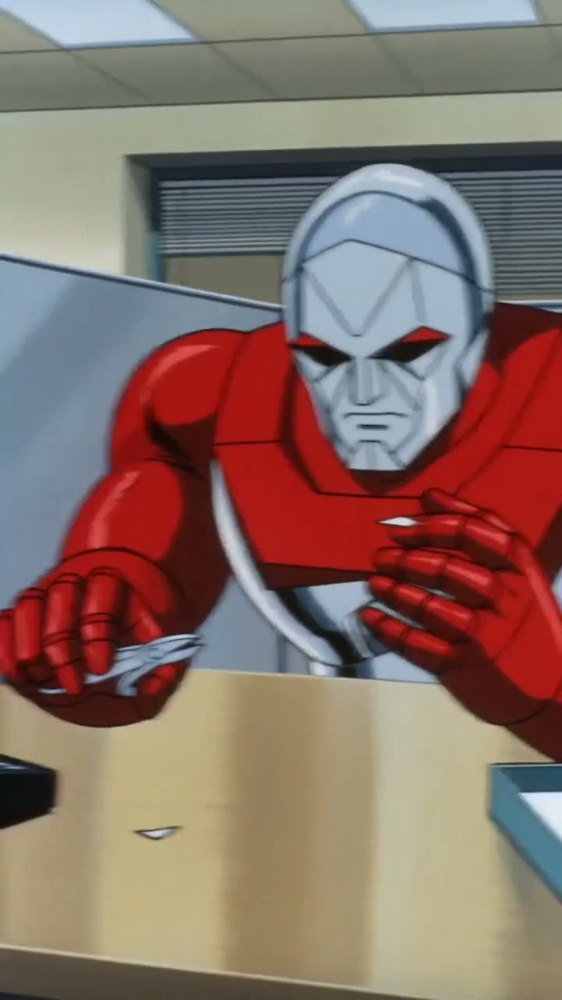
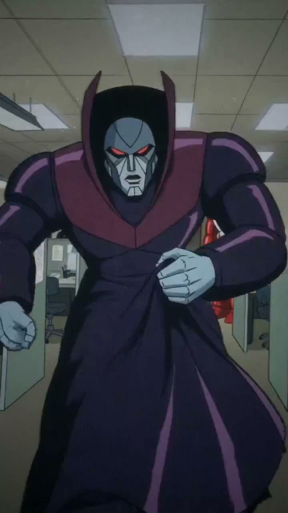
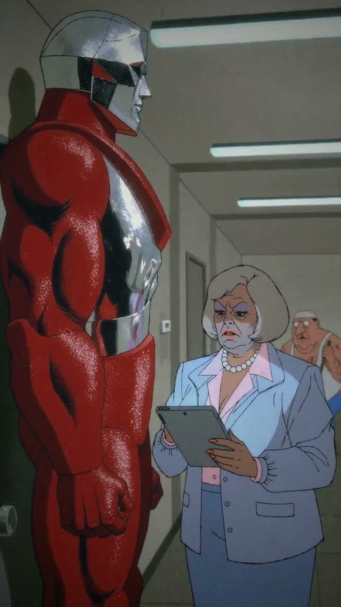
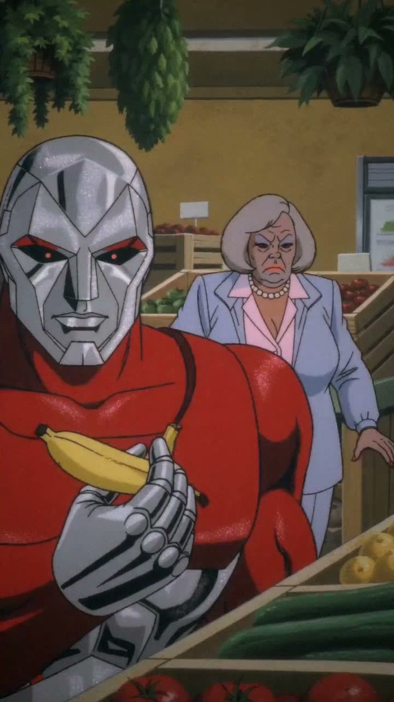
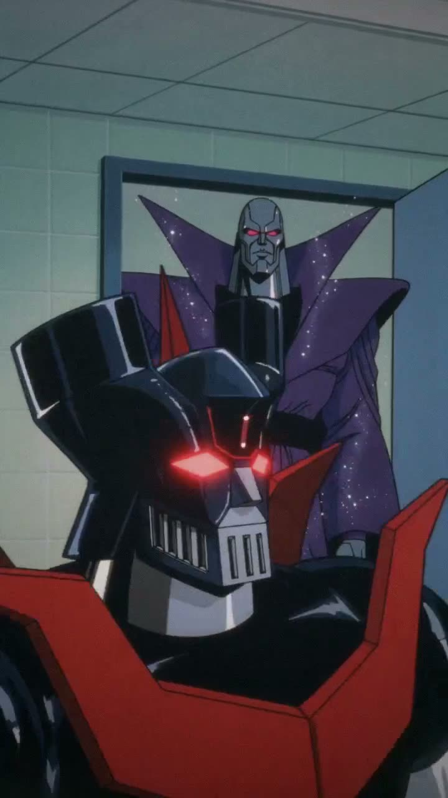
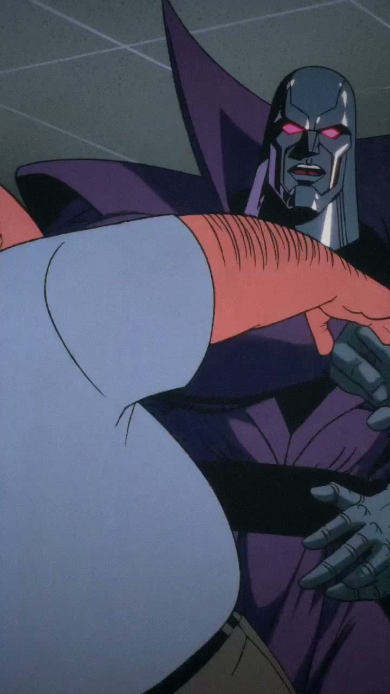
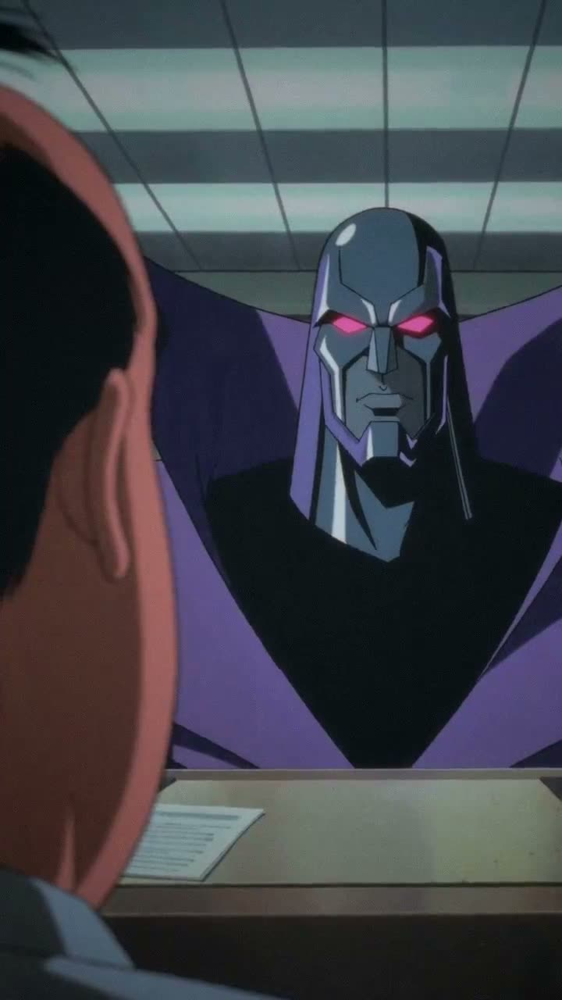
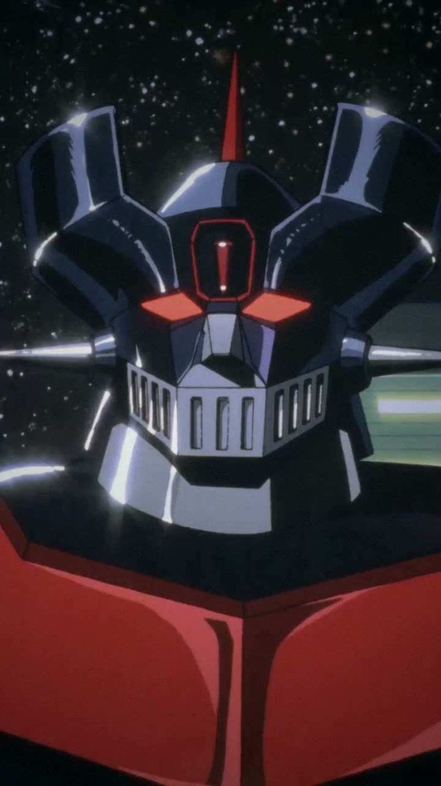
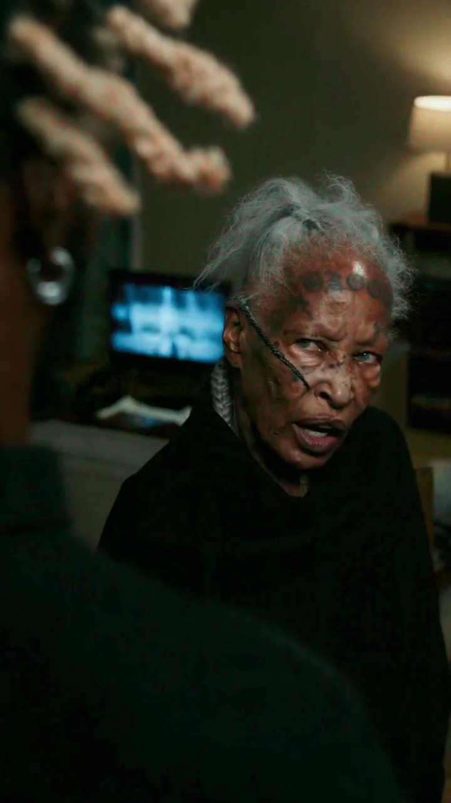
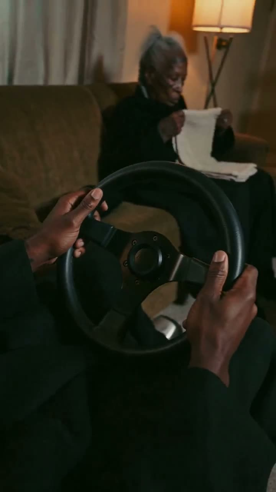

VNMSFX is a one-person studio running on file-based agent infrastructure — a locked seven-stage pipeline with compounding eval loops and human-in-the-loop controls. The episodes below weren't made despite AI's chaos. They exist because the system disciplines it.
Every clip below is AI-generated end-to-end — cast, performance, camera, sound — directed through written prompt systems, screened against kill criteria, and finished with a house film grade. Tap any card to play.
A mockumentary sitcom about retired war robots working at a mid-size insurance company — shot in the style of a 1987 cel-animated TV master, graded on a custom FFmpeg film pipeline.








Fifteen-second cold opens where a familiar modern annoyance triggers lethal tradecraft — graded in the series' OLIVE-GLASS look, matched shot-to-shot across episodes.


Generative models drift, forget, and ignore instructions. The studio wraps them in an operating system — plain-text law, versioned in git, that an AI agent boots from on every session. Four layers:
The agent is disposable; the system is not. Every project boots from files, so it survives session resets, context loss, and model swaps.
Scripts measure what judgment used to eyeball — prompt caps counted, screenings auto-extracted, finishing grades triggered by a single word.
The scoreboard doesn't just track the AI's failures — it surfaces the human's recurring blind spots and says them out loud.
The system pitches slates of options with a recommendation. Money is never spent and nothing publishes without an explicit human pick.
Directorial method — coverage, rhythm, signal theory — encoded as advisory checkpoints that run on every episode automatically.
The whole studio rebuilds itself from a single bootstrap: a structured intake interview whose answers fill verbatim templates, verified by checklist. Video was the test case.
The constitution text, the stage instruments, the prompt architecture, and the bootstrap itself — the trade secrets stay in the vault. I walk through them live, happily.
I'm Brandon Adams — builder and showrunner of VNMSFX. The full system walkthrough (live, with the vault open) is available on request.